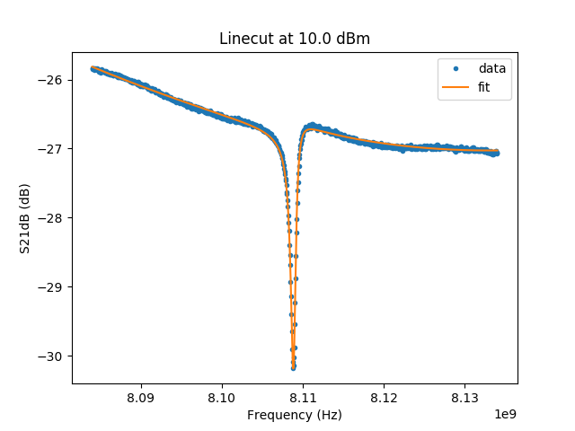

Example for S11fit¶
Example for fitting RF spectroscopy.
There are various options available for S11fit.

Data and fit for M59_2017_06_26_16.58.40_RF_vs_power_m60dbmatt_2amp_ref_sample.dat.¶
"""Example for fitting RF spectroscopy
There are various options available for S11fit.
.. figure:: ../../examples/example_S11fit.png
:align: center
Data and fit for Circuit model used for :code:`M59_2017_06_26_16.58.40_RF_vs_power_m60dbmatt_2amp_ref_sample.dat`.
"""
import stlabutils
import matplotlib.pyplot as plt
import numpy as np
# Import data
myfilename = './data/M59_2017_06_26_16.58.40_RF_vs_power_m60dbmatt_2amp_ref_sample.dat'
mydata = stlabutils.readdata.readdat(myfilename)
# Take linecut
idx = 10
myblock = mydata[idx]
rfpow = myblock['Power (dBm)'][0]
freqs = myblock['Frequency (Hz)']
S11re = myblock['S21re ()']
S11im = myblock['S21im ()']
S11 = S11re + 1j * S11im
# Fit the linecut. Note that the linear S11 parameters are required, not the ones in dB
params, _, _, _ = stlabutils.S11fit(freqs, S11, ftype='A')
fitres = stlabutils.S11func(freqs, params, ftype='A')
# Plot
plt.plot(freqs, 20 * np.log10(abs(S11)), '.', label='data')
plt.plot(freqs, 20 * np.log10(abs(fitres)), label='fit')
plt.xlabel('Frequency (Hz)')
plt.ylabel('S21dB (dB)')
plt.title('Linecut at {} dBm'.format(rfpow))
plt.legend(loc='best')
plt.savefig('example_S11fit.png')
plt.show()
plt.close()